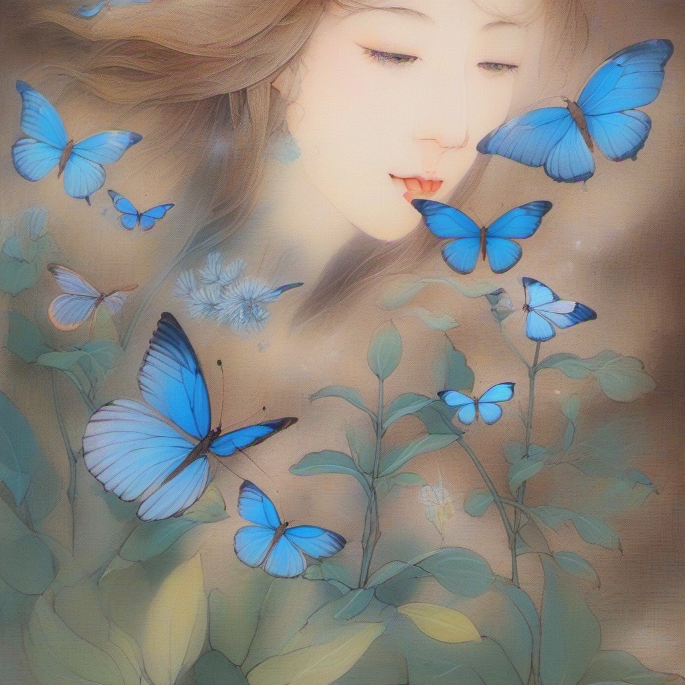

庄周梦蝶
- Antique,a man lying in bed to sleep,mature,(male:4),light blue long shan,ng_deepnegative_v1_75t,(badhandv4:1.2),EasyNegative,(worst quality:2),1girl,female,2girls,
- Antique,a man dreams that he has become a butterfly,mature,(male:4),light blue long shan,dream,(a butterfly:2),ng_deepnegative_v1_75t,(badhandv4:1.2),EasyNegative,(worst quality:2),1girl,female,2girls,
- Antique,butterfly flying in the garden,mature,(male:4),light blue long shan,dream,(a butterfly:2),flowers,
- Antique,the man wakes up and looks at the butterfly,mature,(male:4),light blue long shan,dream,(a butterfly:2),butterfly flying,ng_deepnegative_v1_75t,(badhandv4:1.2),EasyNegative,(worst quality:2),1girl,female,2girls,


图片为liblib网站生成
在生成图片前，我先找了一个古风模型，然后导入库中。然后将成语文本输入，翻译成英文，再选取人物画面的关键词。
这个模型的毛病是我的要求是生成男性，但他总给我生成女的。
所以我在负面词条选择了女性词条，在正面词条选择了所有的男性词条，调高了男性词条权重，还加上了fat词条，不然生出来的人物很不好看。